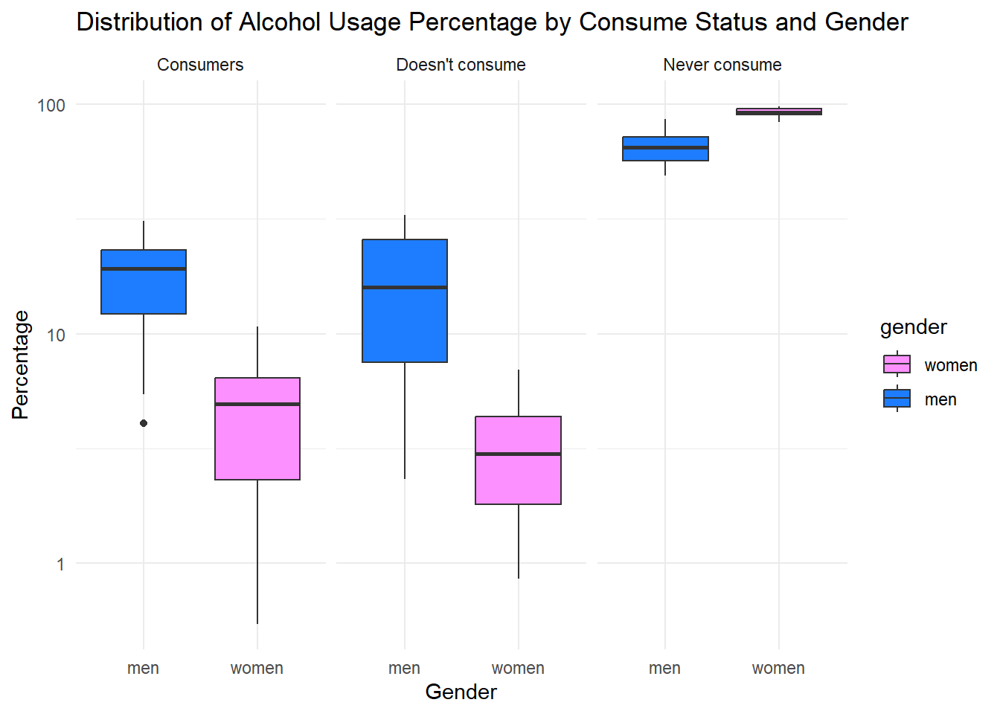
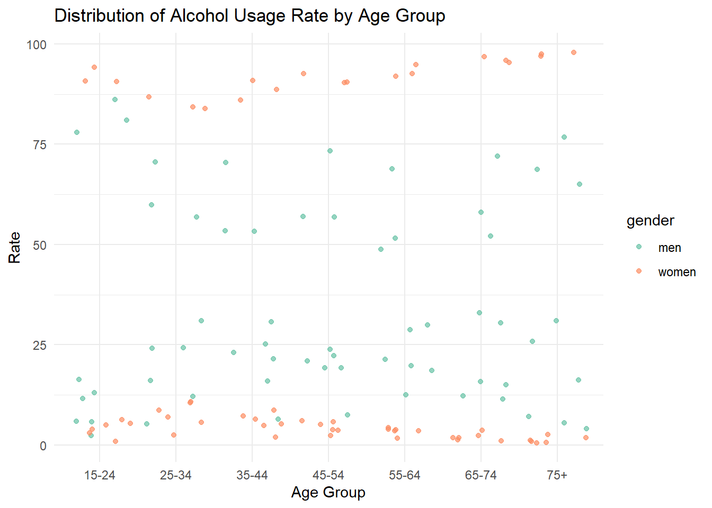
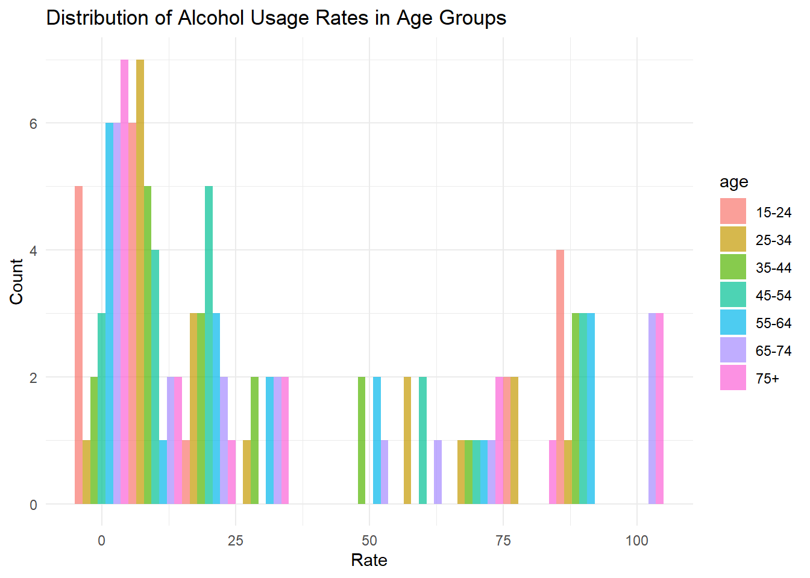
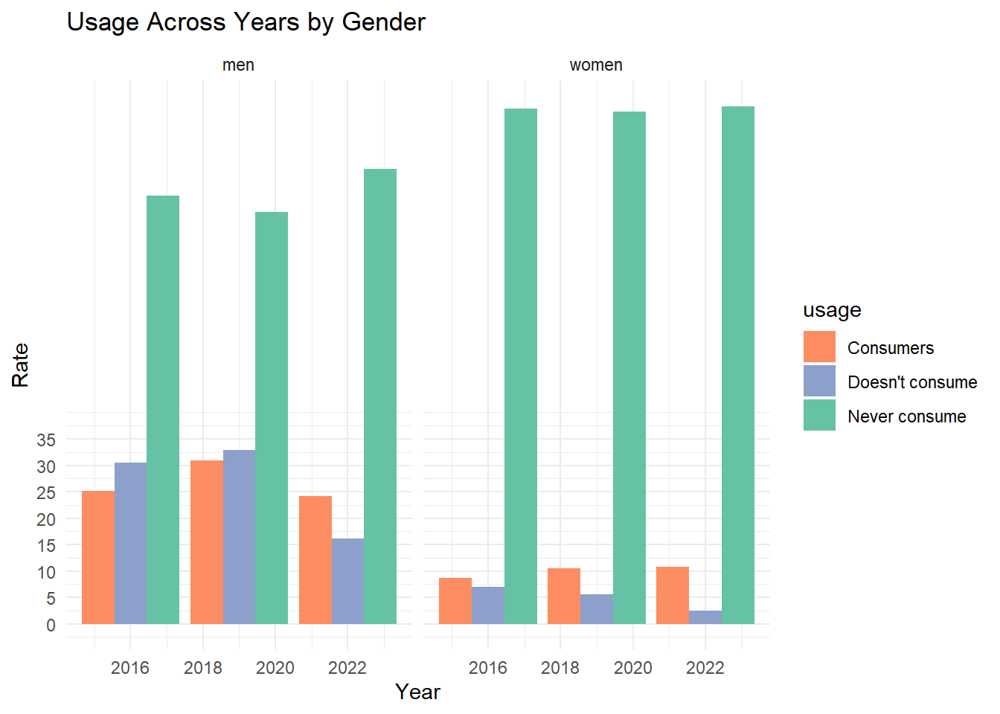

1 Dataset 1 : The Percentage of Main Diseases/Health Problems Declared by Individuals in the Last 12 Months by Sex, 2016-2022
1.1 Average Percentage by Disease with Gender Connection
Show the code
summary_data <- data_1_longer %>%group_by(Diseases, Gender) %>%summarise(mean_percentage =mean(Percentage))abbreviate_disease_names <-abbreviate(summary_data$Diseases)plot <-plot_ly(summary_data, x =~abbreviate_disease_names, y =~mean_percentage, color =~Gender,colors =c("#1E7DFF", "#FC90FF"),type ="bar") %>%layout(title =list(text="Average Percentage by Disease with Gender Connection", x =0, y =1),xaxis =list(title ="Diseases",zeroline =FALSE),yaxis =list(title ="Percentage",zeroline =FALSE))plot
1.2 Percentage by Disease with Year Connection
Show the code
abbreviate_disease_names <-abbreviate(data_1_longer$Diseases)custom_colors <-c("#66c2a5", "#fc8d62", "#8da0cb")ggplot(data_1_longer, aes(x = Diseases, y = Percentage, fill =as.factor(Year))) +geom_bar(stat ="identity", position ="dodge", width =0.7) +labs(title ="Percentage by Disease with Year Connection",x ="Diseases",y ="Percentage",fill ="Year") +scale_x_discrete(labels = abbreviate_disease_names) +scale_y_continuous(breaks =seq(0, 35, by =5)) +scale_fill_manual(values = custom_colors) +theme_minimal() +theme(axis.text.x =element_text(angle =45, hjust =1))
1.3 Distribution of Percentage by Gender for Each Disease
Show the code
aabbreviate_disease_names <-abbreviate(data_1_longer$Diseases)p6 <-plot_ly(data_1_longer,x =~reorder(abbreviate_disease_names, -Percentage),y =~Percentage,color =~Gender,colors =c("#1E7DFF", "#FC90FF"),type ="box") %>%layout(boxmode ="group",title ="Distribution of Percentage by Gender for Each Disease",xaxis =list(title ="Diseases",zeroline =FALSE),yaxis =list(title ="Percentage",zeroline =FALSE))p6
2 Data Set 2 : The Percentage of Individuals’ Status of Alcohol Use by Sex and Age Group, 2016-2022
2.1 Alcohol Usage Rate Distribution by Age Group
Show the code
ggplot(data_2_longer, aes(x = age, y = rate, fill = gender)) +geom_boxplot() +labs(title ="Distribution of Alcohol Usage Rate by Age Group",x ="Age Group",y ="Rate") +scale_fill_manual(values =c("#99C2FF", "#FFB6C1")) +theme_minimal()

2.2 Strip Plot Showing Distribution of Alcohol Usage Rate by Age Group
Show the code
ggplot(data_2_longer, aes(x = age, y = rate, color = gender)) +geom_jitter(alpha =0.7) +labs(title ="Distribution of Alcohol Usage Rate by Age Group",x ="Age Group",y ="Rate") +scale_color_manual(values =c("#66c2a5", "#fc8d62")) +theme(axis.text.x =element_text(angle =45, hjust =1)) +theme_minimal()

2.3 Distribution of Alcohol Usage Rates in Age Groups
Show the code
ggplot(data_2_longer, aes(x = rate, fill = age)) +geom_histogram(binwidth =10, position ="dodge", alpha =0.7) +labs(title ="Distribution of Alcohol Usage Rates in Age Groups",x ="Rate",y ="Count") +theme_minimal()

2.4 Usage Across Years by Gender
Show the code
custom_colors <-c("#fc8d62", "#8da0cb","#66c2a5")ggplot(data_2_longer, aes(x = year, y = rate, fill = usage)) +geom_bar(stat ="identity", position ="dodge") +facet_grid(. ~ gender) +labs(title ="Usage Across Years by Gender",x ="Year",y ="Rate") +scale_y_continuous(breaks =seq(0, 35, by =5)) +scale_fill_manual(values = custom_colors) +theme_minimal()

3 Data Set 3 : Body Mass Index Distribution of Individuals by Sex, 2008-2022
ggplot(data_3_long, aes(x = Year, y = Percentage, fill = Category)) +geom_area() +labs(title ="Composition of Categories Over Years",x ="Year",y ="Percentage") +theme_minimal()
3.3 Percentage of Categories by Gender
Show the code
ggplot(data_3_long, aes(x = Sex, y = Percentage, fill = Category)) +geom_bar(stat ="identity", position ="dodge") +labs(title ="Percentage of Categories by Gender",x ="Gender",y ="Percentage") +theme_minimal()